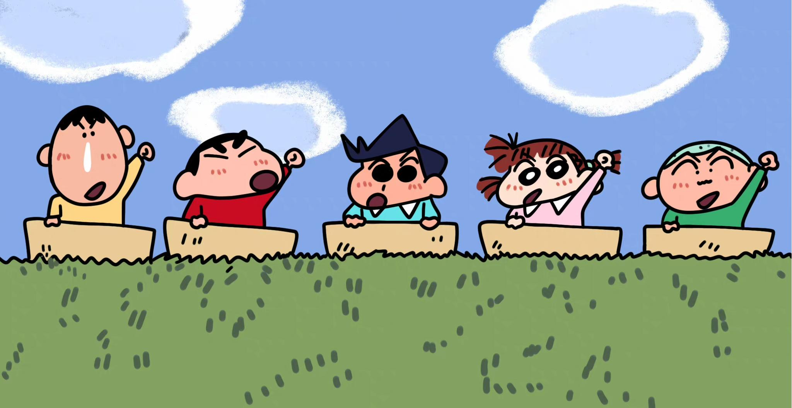
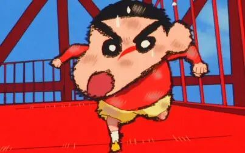

 |
|||||
首页 |
电影简介 |
角色介绍 |
剧情介绍 |
相册 |
|
———— 剧情介绍 ———— |
|||||
 |
简介 |
||||
有一天，日本突然再次举办了20世纪博览会，吸引了大量的成人来参观，博览会充满着浓厚的怀旧气息，大人们重拾昔日的一点一滴，不禁沉迷其中，渐渐连小孩也不管了。然后，一个神秘组织在街上进行号召，派人把大人都接走了。大人们不见了，又没有食物，小孩子徬徨地聚在街上，因为失去大人的照顾而感到无助。入夜后，一把声音在电台广播出现，他自称为集团“Yesterday Once More（昨日重现）”的首领阿健，劝说小孩乖乖等候被运送，企图诱骗他们，把小孩子送去博览会隔离，目的是为他们洗脑，清除21世纪的思想。而春日部防卫队在逃亡的过程中，合力开走了幼稚园的校车，但中途竟然被受迷惑的广志和美冴等人阻挠，最后他们跑到了20世纪博览会的本部。由于校车意外撞停了，风间、妮妮、正男和阿呆都被抓走，只有小新带着小白和小葵逃了出来，来到了展览会里面，小新遇见了年幼的广志，小新心生一计，脱掉广志的鞋子给他闻，于是，广志开始了回忆旅程，想起了过往。待广志恢复神智后，立刻带着家人打算破坏阿健的阴谋，经过重重险阻，终于感动了怀旧城镇的居民，也算是打败了阿健。阿健和茶子心灰意冷，正想自寻短见，却被小新和突如其来的鸽子阻止，于是打消寻短的念头。之后野原一家跟其他所有人一起回春日部，而阿健和茶子会活下去寻找属于他们自己的未来。 |
|||||